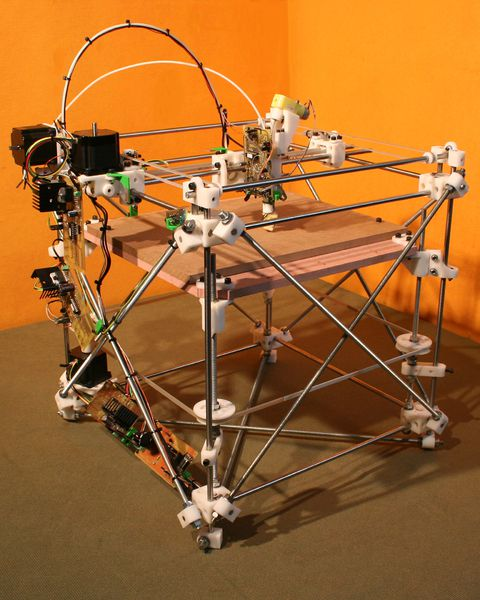
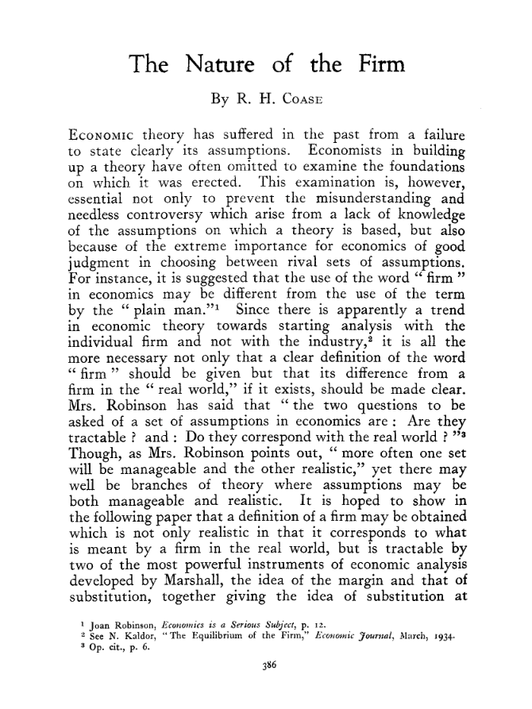
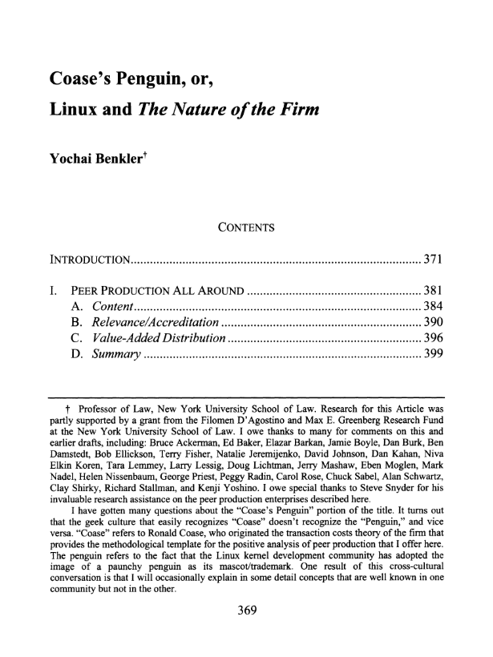
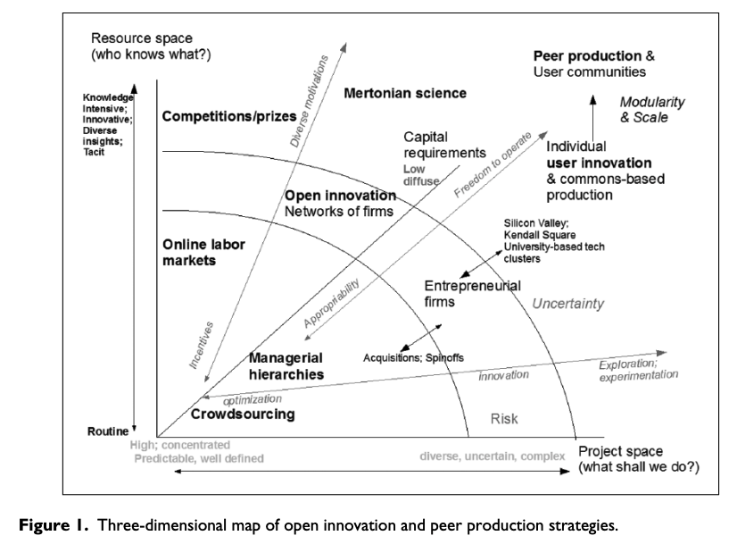
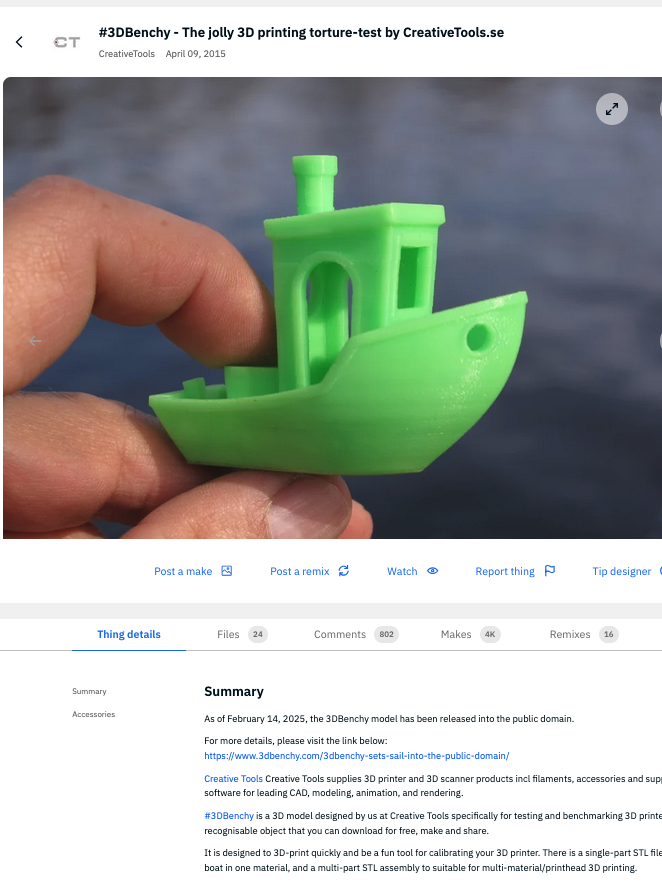
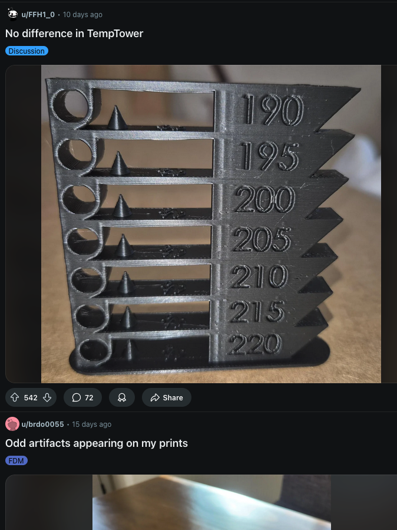
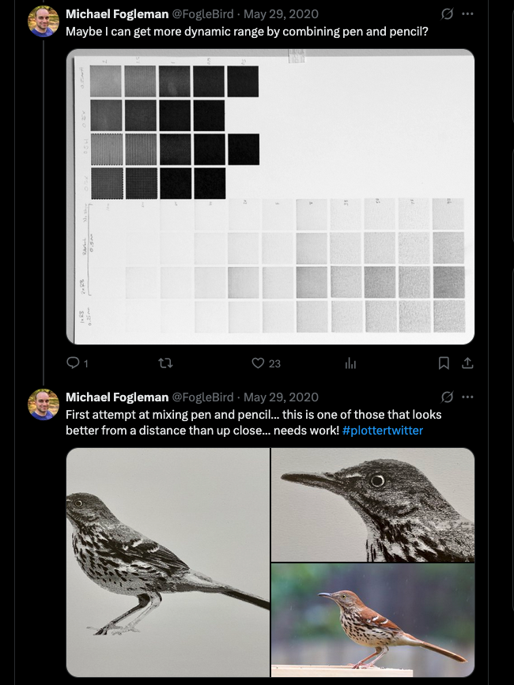
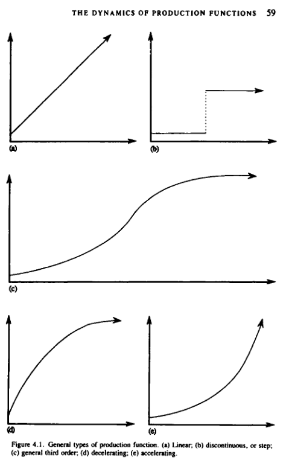

Understanding and Building Online Community around Physical Practices
Blair Subbaraman
COM 597
2025.03.14
Who is producing the technology?
Commons-based Peer Production

RepRap 3D Printer, 2007
Firms
Bambu X1-Carbon, 2024
Communities and Firms
Coase

Firms reduce transaction costs
Benkler

Peer production reduces costs
Communities and Firms
Coase
Firms reduce transaction costs
Benkler
Peer production reduces transaction costs
Schumpeter
Producers (firms) innovate
von Hippel
Users innovate, transaction-free
Innovation Strategies

Benkler, Yochai. "Peer production, the commons, and the future of the firm." Strategic Organization 15.2 (2017)
A Variety of Online Communities...
Thingiverse

A Variety of Online Communities...
Thingiverse
r/FixMyPrint

A Variety of Online Communities...
Thingiverse
r/FixMyPrint
#PlotterTwitter

...Produce a Variety of Resources
Thingiverse
Digital models
r/FixMyPrint
#PlotterTwitter
...Produce a Variety of Resources
Thingiverse
Digital models
r/FixMyPrint
Knowledge? Skills?
#PlotterTwitter
...Produce a Variety of Resources
Thingiverse
Digital models
r/FixMyPrint
Knowledge? Skills?
#PlotterTwitter
Approaches/Techniques?
...Produce a Variety of Resources
Thingiverse
Digital models
r/FixMyPrint
Knowledge? Skills?
#PlotterTwitter
Approaches/Techniques?
Critical Mass

A focus on the variety of resources that online making communities produce can ground systems development in actual practiceA focus on the variety of resources that online maker communities produce can ground system development in actual practice
Community Interdependence
How do makers participate in adjacent communities?
How is the notion of 'maker identity' changing—or not—in these online spaces?
How are emerging communities of practice organizing online?
Systems Implications
How can future design repositories be designed to facilitate physical skill development?